Du må bruke presentasjonsmodus/fullskjermsvisning for å lese denne, men du skal ikke bruke frem/tilbake-knappene, KUN knappene som dukker opp på sliden for å ta deg videre! Ofte må du laste filen ned til maskinen din og åpne den der for å få til dette. Merk at noen knapper vil åpne nettskjema, videoer eller andre ressurser i internettbrowseren din. Når du gjør det riktig, skal du kun se en side av gangen, og når du trykker på knappene som dukker opp på skjermen så skal disse ta deg frem/tilbake i dokumentet. Du vil miste mye læringsutbytte hvis du ser flere slides av gangen. Får du det ikke til, spør foreleser/gruppelærer!
Dette er en erstatning for forelesningen i emnet. Har du gått skikkelig gjennom disse interaktive forelesningsnotatene så trenger du ikke å lese de fulle forelesningsnotatene (med unntak av oppgavene bak). All informasjonen du trenger, får du her. Du kommer til å få mange grublespørsmål og diskusjonsoppgaver, det er meningen at disse skal gjøres i grupper av minst 2, maks 4 studenter. Det er defor sterkt anbefalt at dere sitter sammen i grupper når dere går gjennom disse interaktive forelesningsnotatene, du vil få betydelig mer utbytte av dem på den måten. En god ide kan være å bli enige om å treffes til den faste forelesningstiden og bruke forelesningslokalet som kommer til å være resevert til dette. Hvis du har kommentarer ris/ros til disse forelesningsnotatene eller til emnet, trykk på 🙂 🙁 knappen som du finner på alle sider.
Forrige side
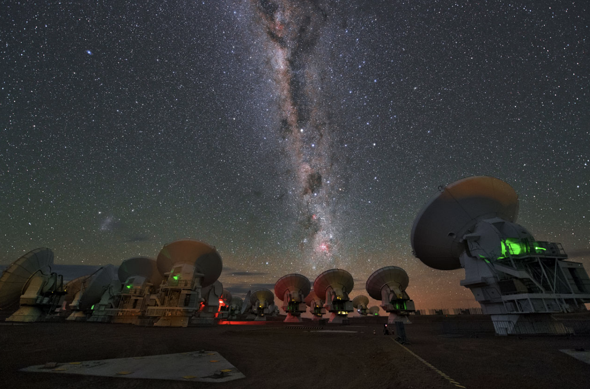
Velkommen til del 1D! Nesten all informasjon vi har om verdensrommet har vi fra stråling som kommer fra objektene. I denne forelesningen skal vi se nærmere på denne strålingen, hvilke prosesser som genererer den og hvordan vi kan få informasjon fra den. Noe har du kanskje vært borti allerede på videregående, som f.eks. sorte legemer, Wiens forskyvningslov og spektrallinjer? Her skal vi fordype oss videre i disse temaene og se både på litt teori men i stor grad på hvordan vi kan anvende det til å få informasjon om universet. Er du klar? Neste side
Vi begynner som vanlig... ...med litt brainstorming og repetisjon. Som det er svært viktig at du gjør før du går videre. Du får allerede litt hjelp her til det som kommer på de neste sidene.
Forrige side🙂 🙁Fluks og luminositet Vi skal fortsette der vi slapp i skjemaet.
Fluks F er... ... den lille energimengden ΔE som passerer gjennom en lite areal ΔA i løpet av et kort tidsrom Δt. Det kan f.eks. være energimengden som vi mottar på et lite areal ΔA av jordoverflaten fra sola, dette ville vært mottatt fluks. Det kunne også være energien som blir strålt ut per areal ΔA av soloverflaten, dette ville vært utsendt fluks.
Luminositet L er definert som... den totale energimengde ΔE som stråles ut av et legeme per lite tidsintervall Δt. Luminositet måles i W som er Joule per sekund. En lyspære med luminositet på 40W, sender totalt ut 40 Joule per sekund, spredt utover i alle retninger.
Hvis vi gjør disse intervallene uendelig små, kan de skrives som deriverte: $$F=\frac{\Delta E}{\Delta A\Delta t}=\frac{d^2E}{dAdt}\ \ \ \ \ L=\frac{\Delta E}{\Delta t}=\frac{dE}{dt}$$Neste side
Forrige side🙂 🙁
Fluks og luminositet
La oss se på oppgaveteksten til oppgave 1D.3 (prosjektstudenter har et liknende problem i utfordring B i del 3). Vi begynner rett på 4. deloppgave, anta at du ser på sola og fluksen F som sola stråler ut er kjent fra Stefan-Boltzmanns lov, F = σT4, denne har du kanskje sett før, men vi skal komme nærmere inn på denne senere. Det viktigste nå er at F er et kjent tall, det samme er radiusen til sola. 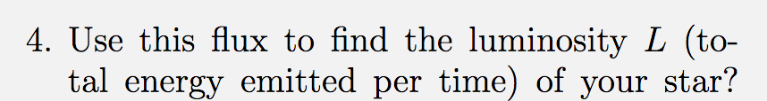 Du skal altså ikke bruke tall nå, kun diskutere hvordan du vil løse oppgaven. Neste side
Forrige side🙂 🙁Fluks og luminositet
Hvis du får til denne oppgaven, så har du funnet luminositeten L til sola. Da kan vi gå videre til neste deloppgave:
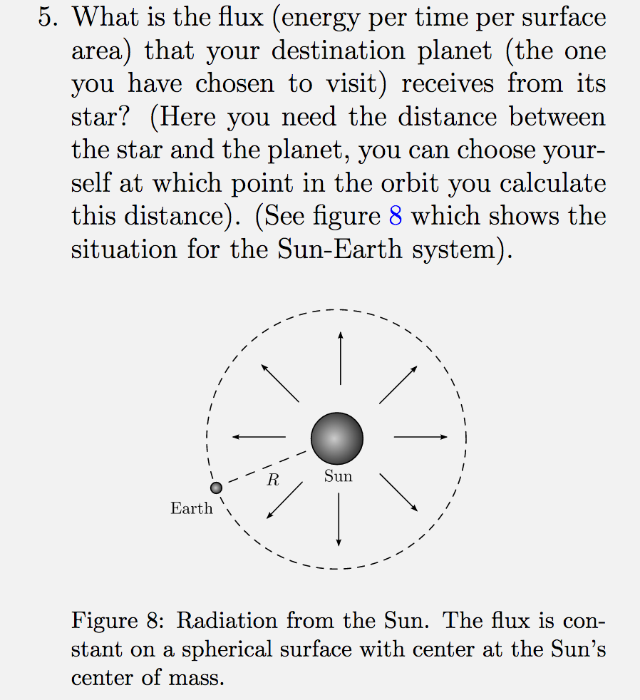 Igjen skal du kun diskutere hvordan oppgaven kan løses. Ser du her at fluks kan ha to betydninger, vi kan snakke om utstrålt fluks og mottatt fluks. I begge tilfeller er det energien som passerer gjennom et areal per tidsenhet, enten den ene eller andre veien. Ser du hvordan du kan finne fluksen fra sola som mottas ved f.eks. Saturn? Ideen er veldig lik den du brukte til å finne luminositeten til sola. Tenk deg godt om før du går videre til neste side. Neste side
Forrige side🙂 🙁Fluks og luminositet
Hvis du får til denne oppgaven, så har du funnet fluksen FSaturn fra sola på Saturn (du skal altså ikke finne tall, men vite hvordan du kunne funnet dette tallet). Hvis du ikke fikk det til, bare anta at du har fått denne størrelsen. Da kan vi gå videre til neste deloppgave: Igjen skal du kun diskutere hvordan oppgaven kan løses. Ikke gå videre før du har et forslag til løsning og repeter hele prosessen for hvordan du nå kan finne hvor stort solpanel du trenger for at en satelitt ved saturn skal få nok solenergi til å drive instrumentene ombord. Neste side
Hvis du slet med å få til oppgave 1D3, så kan du se på denne videoen for å få noen tips . Hvis du er usikker på fremgangsmåte eller svaret, spør gruppelærer. Når du har forstått godt hvordan du løser 1D3, så er du klar til å ta fatt på å diskutere 1D.4 (også i prosjektet må en liknende utfordring løses): 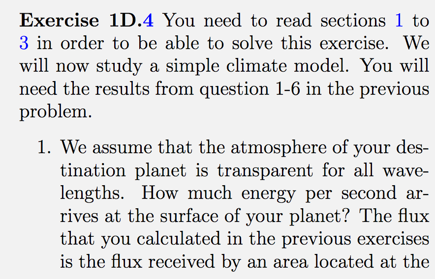 Legg merke til hintet om å anta at planeten er en skive!Neste side
Forrige side🙂 🙁
Fluks og luminositet
Siste deloppgave av 1D.4: 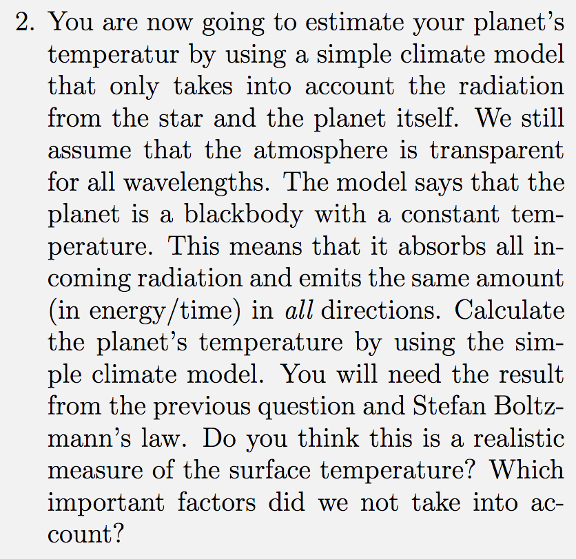
Du skal igjen kun diskutere fremgangsmåten, ikke nødvendigvis løse oppgaven med tall nå.
Husk at for en planet å være i likevekt med stabil temperatur så må den motta like mye energi som den sender ut.
Du kommer du igjen til å trenge Stefan-Boltzmanns low, F = σT4 der σ er et tall og T er temperaturen til legemet. Stefan-Boltzmanns lov gjelder kun for sorte legemer (forklaring senere), vi skal her anta at Saturn er et sort legeme.
Ikke gå videre før du har tenkt godt gjennom hva du kan gjøre.Hvis du ikke får det til, få hjelp av en gruppelærer!Neste side
Forrige side🙂 🙁Fluks og luminositet
Uttrykket F for fluks som du har møtt så langt er den samlede fluksen over alle bølgelengder. Vi kan også definere en bølgelengdeavhengig fluks som altså er energien ΔE som passerer gjennom et areal ΔA hvert tidssteg Δt med et lite bølgelengde intervall Δλ for bølgelgende i intervallet mellom λ og λ + Δλ: $$F(\lambda)=\frac{\Delta E}{\Delta A\Delta t\Delta\lambda}=\frac{d^3E}{dAdtd\lambda},$$ den siste overgangen gjelder når vi gjør Δ-ene uendelig små.
Stefan-Boltzmanns lov For sorte legemer (kommer vi straks til!), så er fluksen (den totale fluksen over alle bølgelengder) som sendes ut fra legemet gitt ved temperaturen T til legemet som: F = σT4 Der σ er et tall som du snart skal se hvordan man kan utlede.
Husket du det omtrent? Et sort legeme er et legeme som absorberer all stråling som faller på det. Ingen stråling går gjennom legemet og ingen stråling reflekteres. MERK: Det betyr ikke at objektet ikke stråler!! Sorte legemer sender ut sort stråling som kommer fra bevegelsen til atomene og molekylene i legemet. En stjerne er en ok tilnærmelse til et sort legeme.Neste side
Forrige side🙂 🙁Sorte legemer
For sorte legemer kan man utlede Plancks strålingslov. Denne utledningen kommer du til å gjøre i senere kurs, her bare aksepterer vi at for fluks F(λ) så er den gitt ved” $$F(\lambda) = \frac{2\pi hc^2}{\lambda^5}\frac{1}{e^{\frac{hc}{kT\lambda}-1}}$$Hvordan kan du bruke dette til å utlede Stefan-Boltzmanns lov?
(og derav også utlede tallet σ,. merk at dette ikke har noe med standardavvik å gjøre selv om vi bruker samme symbol). Merk at du ikke skal gjøre utledningen, men tenke detaljert gjennom hvordan du ville gått frem!. Hvis du er usikker, gå gjerne tilbake og se på definisjonen av Stefan-Boltzmanns lov. Neste side
Forrige side🙂 🙁Sorte legemer Hadde du et forslag til hvordan utlede Stefan-Boltzmanns lov? I denne videoen går vi gjennom det i detalj.
Hva så med Wiens forskyvningslov: λmaxT = konstant Her er λmaxden bølgelengden som objektet stråler mest på, dvs. den bølgelengden med størst fluks F(λ), og T er temperaturen til legemet. Med Wiens forskyvningslov kan du altså finne temperaturen til et sort legeme ved å finne hvilken bølgelengde det stråler mest på!
Kan du se hvordan du kan gå frem for å utlede Wiens forskyvningslov? Tenk før du blar om!Neste side
Forrige side🙂 🙁Sorte legemer Tenkte du deg virkelig godt om før du bladde om nå eller???????? Hvis ikke så får du en ny sjanse nå, tenk før du blar om! Neste side
Forrige side🙂 🙁Sorte legemer
Jepp, å finne bølgelengden med den største fluksen er jo ekvivalent med å finne toppen av kurven F(λ). Å finne topp-punktet av en kurve gjør som kjent vi ved å sette den deriverte lik null $$\frac{dF(\lambda)}{d\lambda}=0$$ Javel, ta et papir og gjør det da vel! Og så da...?? Hva gjør du videre??? Det var kanskje ikke helt rett frem? Her trenger du hjelp av litt numeriske beregninger for å komme i mål og finne verdien til konstanten i Wiens forskyvningslov: λmaxT = konstant Før du går videre, lag nå en liten skisse for hvordan du vil gjøre dette numerisk. Neste side
Forrige side🙂 🙁Sorte legemer
I oppgave 1D.2 får du hjelp til å løse dette (hvis du skulle ønske å gjøre den nå, erstatt B(λ) med F(λ) overalt i oppgaveteksten, du får samme svar.)
La oss gå tilbake til
oppgave 1D.3, første deloppgave: Ved hvilken bølgelengde λ stråler solen mest energi? Anta at solen er et sort legeme. Anta også at temperaturen på solens overflate er 5778K, og konstanten i Wiens forskyvningslov er λmaxT = 2.898 × 10−3m ⋅ K hvor enhetene her er meter ganger Kelvin.
Bruk bølgelengdeoversikten her for å finne hvilken farge det tilsvarer.Overrasket? Kan du finne en forklaring hvis svaret ikke stemmer overens med dine forventninger? Neste side
Forrige side🙂 🙁Romvinkler
Vi har så langt snakket om fluks og luminositet. Vi skal nå se på et relatert begrep som heter intensitet. Dette er et noe mer abstrakt begrep som vi skal bruke lite i dette kurset, men som du bør kunne og som du kommer til å se igjen i senere kurs. Før vi begynner med intensitetsbegrepet trenger vi først å diskutere et annen nytt begrep.
Utvidelse av vinkelbegrepet Hvis du skulle generalisere vinkelbegrepet fra 2 til 3 dimensjoner, hvordan ville du gå frem? Husker du hvordan vinkelbekgrepet er definert? Hva er definisjonen av en radian?
Forrige side🙂 🙁
Romvinkler Med enhetssirkelen som utgangspunkt, kan vi definere en vinkel slik: 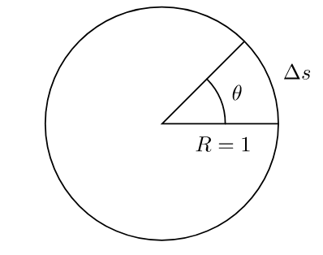
Buelengden Δs er størrelsen på vinkelen i radianer! Hvis det ikke er en enhetssrikel, så må du dele buelengden på r for å reskalere til enhetssirkelen: $$\theta=\frac{\Delta s}{r}$$Kan du nå tenke deg hvordan generalisering til 3 dimensjoner blir?Trykk her når du har tenkt
Hvis vi utvider enhetssirkel fra 2 til 3 dimensjoner får vi enhetskula: 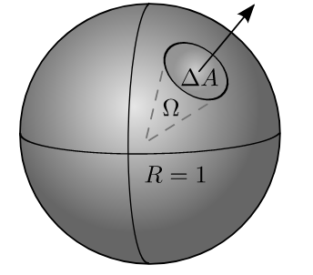
En romvinkel (solid angle) målt i steradianer er arealet ΔA på overflaten av enhetskula som romvinkelen utspenner. Tenk deg f.eks. en bunt av lysstråler som strømmer ut fra sentrum og inn i romvinkelen Ω. Et typisk bruksområde for romvinkler er å se på lysbunter som stråler ut i en gitt retning. Igjen, hvis vi ikke har enhetskula må vi reskalere: $$\Omega = \frac{\Delta A}{r^2}$$Neste side
Forrige side🙂 🙁Intensitet
Vi skal nå gå over til intensitetsbegrepet. Intensiteten er energien per arealenhet, per tid, per bølgelgende og per romvinkel som går gjennom et areal og inn i en gitt retning θ: $$I(\lambda)=\frac{\Delta E}{\cos{\theta}\Delta A\Delta t\Delta \lambda\Delta \Omega}$$
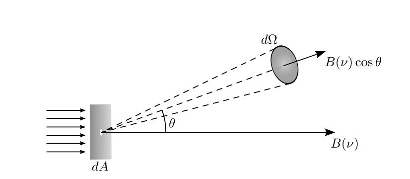
Nærmere forklaring finner du i denne videoen Neste side
Forrige side🙂 🙁Intensitet
Intensiteten til sort stråling kan uttrykkes ved Plancks strålingslov:$$B(\lambda) = \frac{2hc^2}{\lambda^5}\frac{1}{e^{\frac{hc}{kT\lambda}-1}}$$ Som du ser likner dette uttrykket veldig mye på fluksen F(λ) for sort stråling. I oppgave 1D.5 skal du utlede nettopp F(λ) fra B(λ). Kan du tenke deg hvordan du skal gå frem? Lag gjerne en tegning og tenk litt... Jeg tror jammen jeg ser hvordanNja, kunne jeg få et hint?
Forrige side🙂 🙁Intensitet
Kikk først en gang til på videoen for å se definisjonen av intensitet,. Fluksen er all strålingen som går gjennom dette arealet, dvs over alle retninger som går ut ifra arealet. Vi har allerede definert en vinkel θ, vi trenger også en vinkel ϕ for å få med oss alle retningene. Kan du se hva slags romintegral du skal gjøre? Tenk deg at z-aksen går ut gjennom arealet. Hvordan hadde du normalt gjort en slikt integrasjons? Tenk deg om på nytt før du går videre... Neste side
Forrige side🙂 🙁Intensitet
Innså du at du må integrere over halvkulen med sentrum i arealet som strålingen går gjennom? Du må integrere over vinkelen θ som gå fra 0 (rett frem) til π/2 (helt til siden), mens vinkelen ϕ går rundt z-aksen og derfor må integreres fra 0 til 2π. Kan du se det? Får du til faktoren π når du gjør integralet? Hvis du sliter med dette, spør foreleser! Se gjerne også denne videoen for en kjapp illustrasjon av integrasjonen. Neste side
Forrige side🙂 🙁Intensitet
Vi har sett at intensiteten I(λ) av Planckstråling er gitt ved funksjonen B(λ): $$B(\lambda) = \frac{2hc^2}{\lambda^5}\frac{1}{e^{\frac{hc}{kT\lambda}-1}}$$ Ta et papir og gjør om slik at du uttrykker denne ved frekvens B(ν) isteden for ved bølgelengde B(λ). Husk at sammenhengen mellom frekvens og bølgelengde for elektromagnetisk stråling er gitt ved λ = c/ν. Hvis dette høres kjedelig ut, så gjør det likevel, du kommer til å lære noe av det!. Jeg har nå uttrykket for B(ν)
Forrige side🙂 🙁Intensitet Fikk du: $$B(\nu) = \frac{2h\nu^5}{c^3}\frac{1}{e^{\frac{h\nu}{kT}-1}}$$?? JA!NEI!
Forrige side🙂 🙁Intensitet Det var synd for det ble FEIL: $$\xcancel{B(\nu) = \frac{2h\nu^5}{c^3}\frac{1}{e^{\frac{h\nu}{kT}-1}}}$$Neste side
Forrige side🙂 🙁Intensitet
Vi må passe på at energien ΔE er den samme i begge tilfeller. Vi skriver om slik at: ΔE = B(λ)cos θΔAΔtΔΩΔλ = − B(ν)cos θΔAΔtΔΩΔν, der minustegnet kommer fordi Δν = − Δλ, frekvens minker når bølgelengde øker, derfor minustegn. Vi kan forkorte det som er felles: B(λ)Δλ = − B(ν)Δν Hvis vi ganger opp nå så ser vi at vi får en Jacobi-determinant: $$B(\nu)=-B(\lambda)\frac{d\lambda}{d\nu},$$ der vi har latt Δ-ene bli uendelig små. Du kan altså sette inn ν = c/λ slik du gjorde før, men du må også ha med faktoren − dλ/dν. Hva blir denne faktoren? Hvis du gjør det riktig, skulle du nå få $$B(\nu) = \frac{2h\nu^3}{c^2}\frac{1}{e^{\frac{h\nu}{kT}}-1}$$Neste side
Forrige side🙂 🙁Intensitet
Her ser du B(λ):
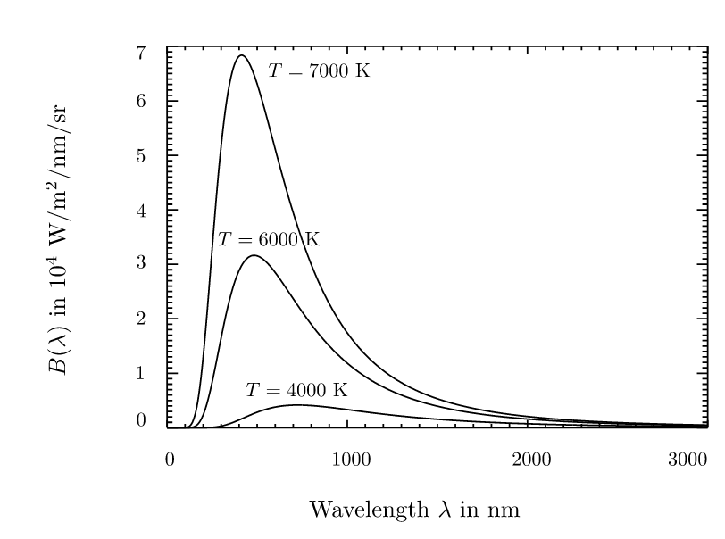
Kan du forklare Stefan-Boltzmanns lov og Wiens forskyvningslov kun ved å bruke denne figuren? Prøv å bruke figuren til å forklare de to lovene til hverandre (eller til deg selv) Jeg har gjort det, ihvertfall forsøkt
Forrige side🙂 🙁
Intensitet
Hvis du hadde problemer med forklaringen, ta en kikk på denne videoen . Da er du klar til å løse oppgave 1D.1. Diskuter hvordan du vil gå frem for å løse denne oppgaven. Hvis du sliter, kontakt gruppelærer. 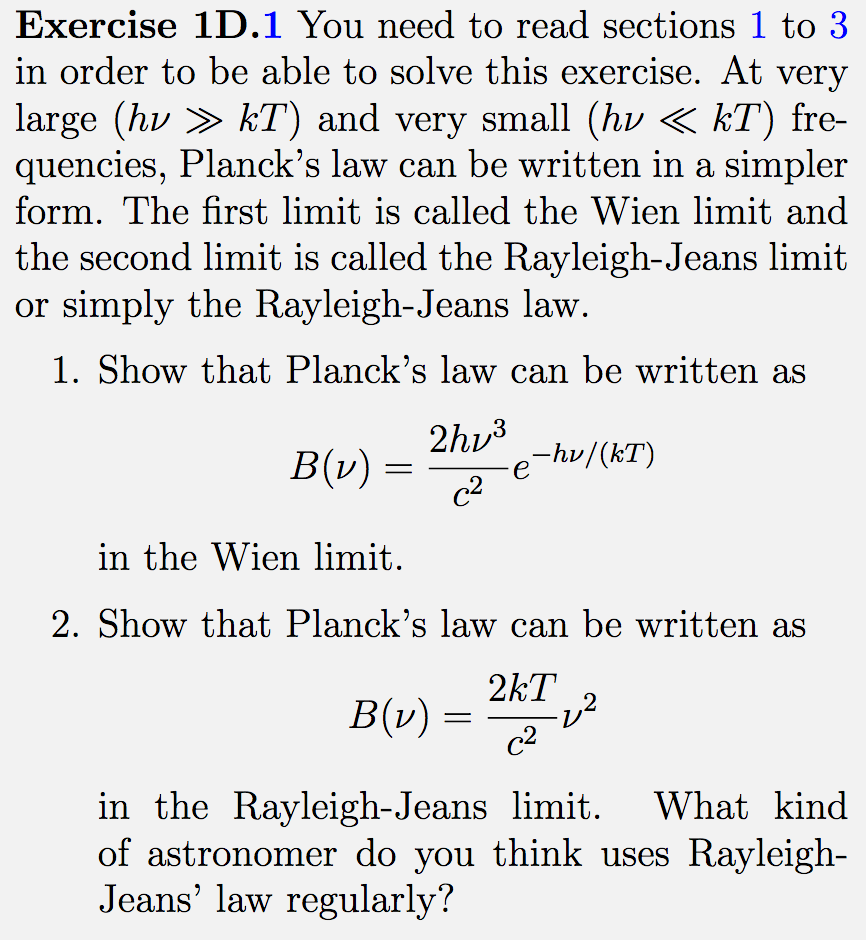
Forrige side🙂 🙁Hvordan får vi informasjon om universet?
Før vi avslutter første forelesning i del 1D vil jeg at du tenker gjennom hvilke kilder vi har til informasjon om universet. Vi har allerede begynt å snakke om elektromagnetisk stråling som er en slik kilde, men finnes det flere? Kan du tenkte deg 3 til som ikke er elektromagnetisk stråling? Trykk her når du har tenkt
Kosmisk stråling Kosmisk stråling er høyenergetiske partikler fra verdensrommet, som regel protoner eller atomkjerner med svært høye hastigheter som kommer inn i jordens atomsfære der de blir omgjort til forskjellige typer elementrærpartikler. Disse har ofte oppstått i supernovaeksplosjoner eller i kraftige magnetfelt nær sorte hull og kan ha beveget seg over tusenvis at lysår. Et problem med kosmisk stråling er at når de detekteres på jorda så har de allerede blitt omgjort til andre partikler i jordas atmosfære. I tillegg vil interstellare/planetariske magnetfelt bøye av partiklenes bane slik at det er vanskelig å bestemme opprinnelseretningen. Disse faktorene gjør at det er begrenset med informasjon vi kan få om universet fra kosmisk stråling.
Nøytrinoer Vi skal senere i kurset snakke om de forskjellige typene elementærpartikler. Nøytrinoer er en klasse av slike elementærparikler. De kalles ofte spøkelsespartikler da de nesten ikke reagerer med andre partikler og dermed er svært vanskelig å måle på. Selv om milliarder av nøytrinoer som genereres i solas kjerne passerer gjennom hver kvadratmeter på jorda hvert sekund, klarer vi likevel bare å detekere noen få om dagen. Intil vi får bedre teknologi som kan detektere langt flere nøytrinoer, så er informasjonen vi kan få om universet fra nøytrinoer begrenset. Men nøytrinostråling kan potensielt gi svært viktig informasjon om prosesser i universet. For eksempel så går nøytrinoene stort sett uhindret fra kjernereaksjonene i solas kjerne og til jorda, de er derfor et potensielt vindu til direkte observasjoner av hva som foregår i sentrum av sola.
Gravitasjonsbølger Eksistensen av gravitasjonsbølger har vært forutsagt fra Einsteins relativitetsteori i over 100 år, men det er først i 2015 at man for første gang klarte å måle slike. Gravitasjonsbølger er små endringer av tidromsstrukturen som brer seg utover i rommet som bølger. De endrer på rom og tidstrukturen når de passerer forbi. De detekteres ved å se på bittesmå endringer i lengden av en lysstråle. Gravitasjonsbølger oppstår i prosesser der store tunge objekter er involvert, typisk kollisjoner mellom sorte hull og/eller nøytronstjerner. Ettersom detektorteknologien nå stadig bedres er gravitasjonsbølger en svært lovende kilde til informasjon om de mest ekstreme prosessene i universet.
Elektromagnetisk stråling Ingen over, ingen ved siden! Elektromagnetisk stråling er den klare vinneren. Nesten alt vi vet om universet har vi fra observasjoner av elektromagnetisk stråling fra objekter. Elektromagnetisk stråling kan ha svært forsjellig bølgelengde fra radiobølger på flere meter til gammastråling med bølgelengder på billiontedels meter. Tabellen i denne Wikipedia-artikkelen gir en god oversikt over de forskjellige typene stråling i det elektromagentiske spektret. Siden elektromagnetisk stråling er så viktig skal vi se på de viktigste prosessene som genererer elektromagnetisk stråling i universet:
Forrige side🙂 🙁Kilder til elektromagnetisk stråling
Du kommer til å lære og utlede i senere fysikkemner at når en ladd partikkel akselereres så sender den ut elektromagnetisk stråling. Husk at akselrasjon er både endring i fart men også endring i retning. Dette fenomenet ligger bak flere av prosessene som genererer stråling.
Synkrotronstråling Synkrotronstråling oppstår typisk når elektroner blir akselerert i magnetiske felt. Et elektron i et homogent magnetisk felt vil begynne å gå i sirkel/spiralbevegelse pga. den magnetiske kraften. Da endrer elektronet retning og sender ut synkrotronstråling. Tilsvarende gjelder for ladde partikler som er i ferd med å bli oppslukt av et sort hull og sirkler rundt med ekstremt høye hastigheter. Bølgelengden til strålingen avhenger av energiene involvert i prosessen. F.eks. sender vår egen galakse ut synkrotronstråling som radiobølger på grunn av kosmisk stråling som blir akselerert i det galaktiske magnetiske feltet.
Forrige side🙂 🙁Kilder til elektromagnetisk stråling
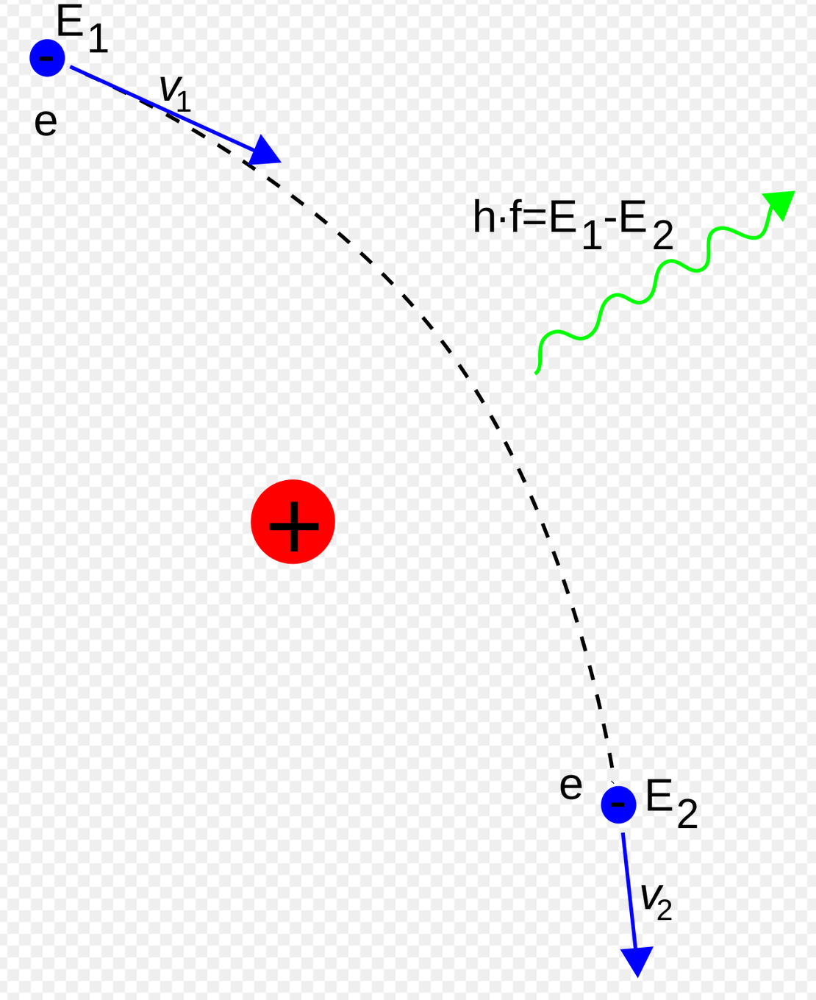(Figur: Wikipedia)
Bremsstrahlung Strålingen med det tyske navnet “Bremsstrahlung” oppstår når raske elektroner blir bremset i det elektriske feltet fra en atomkjerne. Oppbremsingen medfører en akselrasjon som dermed gjør at det avgies stråling på alle bølgelengder. Det intergalaktiske mediet (IGM) er en meget varm gass av elektroner og atomkjerner som befinner seg mellom galaksene i en galaksenhop. Den høye temperaturen gir elektronene høy hastighet, men stadige hastighetsendringer når de nærmer seg atmokjernene gir opphav til Bremsstralhung i form av røntgenstråler. Slike røntgenstråler er en viktig kilde til informasjon om fjerne galaksehoper.
Termisk stråling Denne typen stråling har vi allerede vært borti: termisk stråling fra et sort legeme er det vi kaller Planck-stråling som altså følger Plancks strålingslov. Tilfeldige bevegelser og kollisjoner mellom partikler gir opphav til stråling fra alle legemer/væsker/gasser og blir sterkere med temperaturen som jo gir høyere hastighet på partiklene.
21cm-stråling fra nøytralt hydrogen I kvantemekanikken har elementærpartikler det vi kaller kvantespinn, det kan sammenliknes med egenrotasjon til partiklene. Elektroner og protoner kan ha spinnretning opp eller ned (kun 2 mulige tilstander). I et hydrogenatom med et proton og et elektron så kan enten begge partiklene har spinn opp, begge ha spinn ned eller et spinn opp og det andre spinn ned. Den siste tilstanden er den som har lavest energi. Et system prøver alltid å oppnå lavest mulig energi, så når atomet er i den tilstanden at både elektron og proton har spinn i samme retning så vil det etter en viss tid skje en “spin-flip”, at de faller ned til den laveste tilstanden der de har spinn i hver sin retning. Energiforskjellen blir da sendt ut som stråling. Energien mellom de to tilstandene tilsvarer elektromagnetisk stråling med bølgelengde 21.2cm (mikrobølger).
Forrige side🙂 🙁Kilder til elektromagnetisk stråling
Illustrasjon av spin-flip i hydrogenatomet: 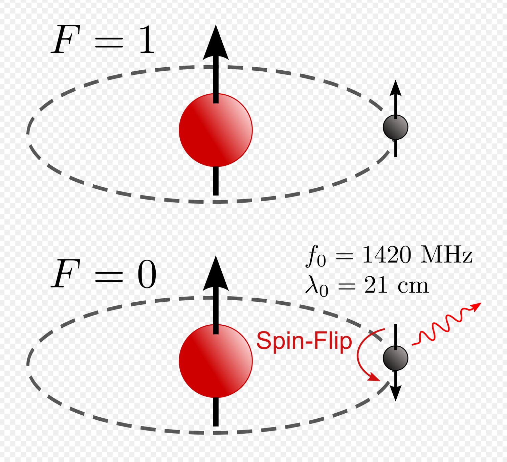(Figur: Wikipedia)Neste side
Forrige side🙂 🙁 Da er vi ferdige med første forelesning i del 1D. Du bør nå:
både kunne forklare fysisk og definere matematisk de grunnleggende uttrykkene luminositet, fluks og intensitet
vite hva et sort legeme er og kjenne noen grunnleggende egenskaper til strålingen fra sorte legemer
kunne beregne hvor stort solcellepanel en romsonde trenger
kunne forklare og beregne en forenklet klimamodell for en planet
vite hva en romvinkel er
kjenne til hvilke kilder vi har til informasjon fra verdensrommet, de forskjellige delene av det elektromagnetiske spektret samt hvilke fysiske prosesser som produserer elektromagnetisk stråling og hvordan.
Flott hvis du nå kan klikke på smilefjesene over og fortelle hva du synes om dette interaktive forelesningsnotatet. Hva var bra og nøyaktig hva kan forbedres? All ris og ros mottaes med takk!